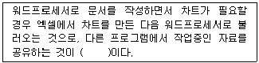
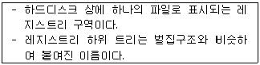
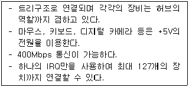

PC정비사-2급 (2016-10-23 기출문제)
1과목: PC유지보수
1. 다음 ( )에 적당한 용어는?

- OLE
- DLL
- INI
- PCX
(정답률: 81%)

2. Windows 7 Professional에서 '실행' 명령창을 통해 사용할 수 있는 명령에 대한 설명으로 잘못된 것은?
- dfrgui - 디스크 조각 모음을 실행 시킨다.
- Msconfig - 시스템 구성 유틸리티를 실행 시킨다.
- Mssystem - 시스템 등록 정보를 확인 할 수 있다.
- NetProj - 네트워크 프로젝터에 연결한다.
(정답률: 84%)
3. 하드디스크의 일부 공간을 주기억장치(Main Memory)로 사용하는 것을 뜻하는 용어는?
- 리소스(Resource)
- 가상 메모리(Virtual Memory)
- 가상 채널(Virtual Channel)
- 스택(Stack)
(정답률: 91%)
4. Windows 7 Professional에서 레지스트리 편집을 위해 실행 창에서 입력해야하는 명령은?
- Regedit
- Registry
- Register
- Registershow
(정답률: 89%)
5. 운영체제에서 하드웨어를 인식하기 위해 필요로 하는 프로그램은?
- 레지스트리
- 압축프로그램
- 드라이버
- 유틸리티
(정답률: 81%)
6. 컴퓨터 시스템의 종류에 대한 설명 중 연결이 잘못된 것은?
- 다중 프로그래밍 시스템 - 주기억장치에 하나의 프로그램을 적재하여 프로그램이 하나씩 빠르게 처리될 수 있도록 한 것을 말한다.
- 다중 처리 시스템 - 두 개 이상의 중앙처리장치를 이용해서 동시에 여러 개의 프로그램을 분담해서 처리하도록 한 것을 말한다.
- 실시간 처리 시스템 - 무작위, 무순서로 발생하는 데이터처리요구에 대해 정해진 시간 내에 결과를 내보내는 것을 말한다.
- 시분할 시스템 - 시간을 일정 크기로 나누어 사용자간의 작업 전환이 빠르게 이루어지도록 한 것을 말한다.
(정답률: 64%)
7. Windows 7의 레지스트리에 대한 설명 중 잘못된 것은?
- 텍스트 기반이며, 크기가 32KB를 넘지 못한다.
- 정렬된 계층구조를 가진다.
- HKey_Users키로 사용자별 정보를 지원한다.
- 원격지에서 관리와 시스템 정책을 설정 할 수 있다.
(정답률: 85%)
8. Windows 7 Professional에서 구성 가능한 디스크 어레이(Array) 구축 방식 중 데이터 손실의 위험을 감수하더라도 고성능을 추구하기 위해 디스크를 병렬로 배치하는 방식은?
- Raid-0 볼륨
- Raid-1 볼륨
- Raid-4 볼륨
- Raid-5 볼륨
(정답률: 75%)
9. 운영체제가 처리해야 할 긴급 상황 또는 돌발 상황을 통지하는 방법은?
- 시그널
- 인터럽트
- 세마포어
- 가상 메모리
(정답률: 90%)
10. 다음에서 설명하는 용어는?

- 허브(Hub)
- 하이브(Hive)
- 게이트웨이(Gateway)
- 네트워크(Network)
(정답률: 86%)
11. Windows 7 Professional에서 관리도구에 포함되지 않는 항목은?
- Windows 메모리 진단
- 구성 요소 서비스
- 작업 스케줄러
- 내게 필요한 옵션
(정답률: 71%)
12. 운영체제 처리 방식 중 데이터가 발생하는 즉시 컴퓨터에서 처리가 이루어지는 시스템으로 은행의 온라인, 기차좌석 예약 등에 사용되는 방식은?
- 일괄처리 방식
- 다중 프로그래밍 방식
- 실시간 방식
- 시분할 방식
(정답률: 93%)
13. Windows 7 Professional에서 부팅 시 안전 모드에서 컴퓨터를 시작하고자 한다. 이때 사용하는 단축키는?
- F1
- F4
- F8
- F10
(정답률: 87%)
14. 컴퓨터의 편리한 사용을 위해 컴퓨터와 사용자의 중간적 위치에서 제반 환경을 제공하는 프로그램은?
- 운영체제
- 주변장치
- 소프트웨어 패키지
- 응용 소프트웨어
(정답률: 88%)
15. Windows 7의 버전이 아닌 것은?
- Windows 7 Starter
- Windows 7 Home Premium
- Windows 7 Media Center Edition
- Windows 7 Enterprise
(정답률: 82%)
2과목: PC운영체제
16. 물체에 비추어 반사된 빛을 전기 신호로 바꾸어 컴퓨터가 인식할 수 있는 디지털 신호로 바꾸는 장치는?
- 프린터
- 스캐너
- 모니터
- VGA
(정답률: 89%)
17. 주기억 장치와 CPU의 속도차가 크므로, 인스트럭션의 수행 속도를 CPU 속도에 맞추기 위한 완충 장치로써 사용하는 메모리는?
- RAM
- ROM
- Cache
- RPROM
(정답률: 78%)
18. 플러그 앤 플레이(Plug & Play)에 대한 설명 중 잘못된 것은?
- Windows에서 사용자가 쉽게 하드웨어를 설치하도록 도와주는 것을 의미한다.
- 하드웨어를 컴퓨터에 연결하기만 하면 자동으로 인식하여 기본 드라이버가 있는 경우 이를 설치한다.
- Windows XP 이후 버전부터 지원 되었다.
- 기본적으로 컴퓨터의 부팅과 함께 작동하며, 각 하드웨어를 검색한다.
(정답률: 81%)
19. 주기억장치의 일반적인 특성이 아닌 것은?
- 반도체 소자를 주로 사용한다.
- 비휘발성이다.
- 보조기억장치에 비해 속도가 빠르다.
- SDRAM, DDR-SDRAM, RDRAM등이 사용된다.
(정답률: 86%)
20. 컴퓨터의 입출력 장치로 사용되지 않는 것은?
- Register
- CD-RW
- OMR
- Printer
(정답률: 67%)
21. 다음에서 설명하는 장치는?

- USB 1.0
- USB 2.0
- IDE
- AMR Modem
(정답률: 82%)
22. 열전사 방식을 사용하는 프린터로서 조그만 거품을 만들어 그 힘으로 잉크를 분사하는 방법을 사용하는 프린터는?
- 도트 프린터
- 레이저 프린터
- 버블젯 프린터
- 가열 잉크젯 프린터
(정답률: 80%)
23. 주변장치에서 직접 데이터 입출력을 수행해서 CPU의 부담을 줄여 속도를 향상시키는 기법으로 올바른 것은?
- ISA
- Buffer
- DMA
- E-IDE
(정답률: 68%)
24. 입력 장치의 범주에 속하지 않는 것은?
- 조이스틱
- 플로터
- 마우스
- 디지타이저
(정답률: 85%)
25. 컴퓨터 시스템 운영 시 전압이 일정하게 유지되도록 조절해주는 장치는?
- UPS
- AVR
- FEP
- SMPS
(정답률: 80%)
26. PC의 전원 공급 장치에서 변환되어 출력되는 전압으로 올바른 것은?
- ±3[V], ±9[V]
- ±5[V], ±12[V]
- ±5[V], ±9[V]
- ±6[V], ±15[V]
(정답률: 85%)
27. 레이저 프린터 사용시 이면지가 잘 걸리는 이유로 부적절한 것은?
- 레이저 프린터의 원리상 종이가 전하를 띠기 때문에
- 드럼에 생성된 양전하가 남아 있을 때
- 이면지를 사용할 경우 전에 출력했던 면이 다시 녹으면서 롤러에 달라붙기 때문에
- 프린터 내부 롤러가 새 제품이기 때문에
(정답률: 81%)
28. 3D 그래픽 카드의 그래픽 칩셋에서 처리한 폴리곤을, 2D 그래픽으로 투영시키는 것을 뜻하는 것은?
- DirectX
- 블랜딩
- 지오메트리
- 음영처리
(정답률: 66%)
29. 전원공급기에서 직류 출력전압이 안정되면 'H'상태로 되고, 정상치 이하로 떨어지면 'L'상태로 되는 단자는?
- +12 Volt
- -12 Volt
- Power Good
- +5 Volt
(정답률: 80%)
30. 컴퓨터를 조립 및 분해하는 과정에서 주의할 사항이 아닌 것은?
- 컴퓨터의 모든 커넥터는 반대로 연결 할 경우 들어가지 않으므로 방향을 확인 할 필요가 없다.
- 정전기의 발생을 조심하여야 한다.
- 잘 모르는 것이 있으면 반드시 매뉴얼을 참고하여야 한다.
- 조립과 분해를 할 경우 주위를 정리하면서 하는 것이 도움이 된다.
(정답률: 87%)
3과목: PC주변기기
31. Windows 업그레이드에 대한 설명으로 잘못된 것은?
- Custom 업그레이드 설치 작업은 폴더 변경 및 파일 시스템을 변경할 수 있다.
- Windows 95에서 업그레이드할 경우, 곧바로 Windows 7으로 업그레이드할 수 있다.
- 호환성이 없는 것으로 판단되는 소프트웨어는 제거한 후에 업그레이드를 수행하는 것이 좋다.
- 동적 업데이트 옵션을 선택하면, 웹 사이트로부터 장치와 어플리케이션을 위한 업데이트를 진행할 수 있다.
(정답률: 87%)
32. Windows를 사용하던 중 "KERNEL32.DLL에서 잘못된 연산이 수행되었습니다."라는 메시지가 나타나는 이유로 잘못된 것은?
- 어플리케이션간 메모리 충돌이 일어날 때
- KERNEL32.DLL의 버전이 다르거나 손상된 경우
- CPU와 메모리의 FSB가 맞지 않을 경우
- 메인 메모리가 불량인 경우
(정답률: 64%)
33. Windows에서 시스템에 설치된 하드웨어 구성과 소프트웨어 설정에 관한 각종 정보를 담고 있는 것은?
- Registry
- Driver
- Notepad
- Access
(정답률: 77%)
34. 인터럽트(interrupt)와 관련된 설명으로 잘못된 것은?
- 인터럽트는 처리프로그램이 실행 중에 예기치 못한 일이 발생하면 이러한 상태를 하드웨어적으로 포착하여 감시 프로그램에게 제어권을 인도하는 것을 말한다.
- 인터럽트가 발생하는 원인은 기계검사 인터럽트, 외부 인터럽트, 입출력 인터럽트, 프로그램 검사 인터럽트 등이 있다.
- 인터럽트는 예약에 의해서만 실행된다.
- 정전에 의한 인터럽트도 있다.
(정답률: 86%)
35. POST 과정의 순서가 바르게 나열된 것은?
- 시스템 버스 테스트 - 그래픽 카드 테스트 - 메모리 테스트 - 키보드 테스트 - 디스크 테스트 - P&P 기능 동작 - CMOS 내용확인 - DMI 기능 동작
- DMI 기능 동작 - 그래픽 카드 테스트 - 메모리 테스트 - 키보드 테스트 - 디스크 테스트 - P&P 기능 동작 - CMOS 내용확인 - 시스템 버스 테스트
- 시스템 버스 테스트 - P&P 기능 동작 - 메모리 테스트 - 키보드 테스트 - 디스크 테스트 - 그래픽 카드 테스트 - CMOS 내용확인 - DMI 기능 동작
- 시스템 버스 테스트 - CMOS 내용확인 - 그래픽 카드 테스트 - 메모리 테스트 - 키보드 테스트 - P&P 기능 동작 - 디스크 테스트 - DMI 기능 동작
(정답률: 80%)
36. Windows 최적화에 대한 설명으로 잘못된 것은?
- 불필요한 시작프로그램을 정리하면 부팅시간이 빨라진다.
- 가상 메모리를 최적의 설정 값으로 설정하면 성능이 향상된다.
- 하드디스크의 캐시를 증가시키면 시스템의 속도를 향상시킬 수 있다.
- 시스템 가동 시 플로피 디스크 드라이브 검색을 생략하면 부팅속도가 느려진다.
(정답률: 75%)
37. 파티션에 대한 설명 중 잘못된 것은?
- 리눅스 파티션은 최대 2개까지 나눌 수 있다.
- 윈도우 파티션의 크기는 MB 단위로 입력할 수 있다.
- 파티션의 크기는 전체 하드디스크의 '%'로 지정할 수 있다.
- 파티션을 나눈 후, 포맷을 해야 사용할 수 있다.
(정답률: 69%)
38. 하드디스크가 ‘Active’ 상태로 설정되지 않았을 경우, 나타나는 메시지는?
- Devide overflow
- Hard disk diagnosis fail
- No ROM Basic system halted
- Error initializing hard drive controller
(정답률: 71%)
39. CPU의 원래 속도 보다 더 높게 클록을 설정하여 사용하는 것을 뜻하는 것은?
- 오버 클럭킹
- 가상 메모리
- 핫 스왑
- 슈퍼 스칼라
(정답률: 92%)
40. Windows가 실행되기 전에 부팅 단계에서 하드웨어가 제대로 작동하고 CPU와 메모리 기능이 정상인지를 확인하는 과정은?
- SCAN
- POST
- PnP
- CMOS 설정
(정답률: 73%)
41. FSB 800인 시스템에서, PC2-6400과 PC2-5300 SDRAM을 혼용했을 경우 결과는?
- PC2-6400으로 동작한다.
- PC2-5300으로 동작한다.
- FSB 133으로 동작한다.
- 대역폭이 다르므로 함께 사용할 수 없다.
(정답률: 76%)
42. FDISK로 분할 영역을 생성하는 과정에 대한 설명으로 잘못된 것은?
- 분할영역을 생성할 경우에는 기본영역 → 확장영역 → 논리영역 순으로 생성한다.
- 분할영역의 용량을 지정할 경우에는 GB단위로만 입력해야 한다.
- 섹터 하나하나를 초기화하는 작업이다.
- 논리 분할 영역은 확장 분할 영역 안에 생성된다.
(정답률: 67%)
43. 메모리를 확장하기 위한 설명 중 잘못된 것은?
- 램이 끼워져 있지 않은 소켓의 유무를 확인한다.
- 메인보드에서 사용가능한 램의 종류를 확인한다.
- 4GB 이상의 램을 운영체제에서 사용하고자 하는 경우 64비트 OS를 설치해야 한다.
- 속도가 다른 DDR2-SDRAM을 혼용 시 높은 속도로 동기화된다.
(정답률: 82%)
44. BIOS Setup의 USER PASSWORD 메뉴에서 설정한 패스워드를 관리자가 잊어버렸을 때 취할 수 있는 조치로 올바른 것은?
- BIOS를 교체한다.
- 메인보드를 교체한다.
- 모든 전원을 차단 한 뒤 메인보드의 건전지를 잠시 제거한 후 결속한다.
- Keyboard의 ESC Key를 클릭한다.
(정답률: 86%)
45. 컴퓨터 조립 후 전원을 켜고 테스트를 할 때 모니터에 아무런 화면도 나타나지 않는 문제의 원인으로 잘못된 것은?
- 전원 공급 장치의 불량
- 하드디스크의 불량
- 램이 제대로 장착되어 있지 않은 경우
- 그래픽 카드가 제대로 연결되어 있지 않은 경우
(정답률: 69%)
4과목: PC네트워크
46. OSI 7 계층의 구조를 순서대로 (하부구조부터) 바르게 나열한 것은?
- 네트워크→ 데이터 링크→ 물리→ 세션→ 표현 → 응용→ 전송
- 응용→ 표현→ 세션→ 물리→ 데이터 링크→ 전송→ 네트워크
- 세션→ 표현→ 물리→ 응용→ 전송→ 데이터 링크→ 네트워크
- 물리→ 데이터 링크→ 네트워크→ 전송 → 세션→ 표현→ 응용
(정답률: 82%)
47. 네트워크를 통해 보안서비스를 제공하는 기술이 아닌 것은?
- SSL(Secure Sockets Layer)
- TLS(Transport Layer Security)
- IPSec(IP Security Protocol)
- SD Card(Secure Digital Card)
(정답률: 80%)
48. 인터넷(WWW)의 표준 프로토콜로 올바른 것은?
- Apple Talk
- NetBEUI
- TCP/IP
- RIP
(정답률: 91%)
49. 루프백(Loopback) 주소를 나타내는 특수 IP 주소는?
- 127.0.0.1
- 1.1.1.1
- 255.255.255.255
- 0.0.0.1
(정답률: 84%)
50. 컴퓨터들간에 통신을 하기 위해 필요한 사항을 미리 정해 놓은 통신규약은?
- Telnet
- Protocol
- IP
- PHP
(정답률: 82%)